About Us
At Porsche, we are driven by a passion for excellence and a commitment to pushing
the boundaries of automotive innovation. Founded in 1931, Porsche has become a symbol
of precision engineering, timeless design, and unparalleled performance. Every model
we create is a masterpiece, meticulously crafted to deliver an extraordinary driving
experience.
Our legacy is built on a relentless pursuit of perfection, where tradition meets cutting-edge technology.
From our iconic sports cars to our versatile SUVs, each Porsche embodies the spirit of innovation that has
defined our brand for over 90 years.
We are more than just a car manufacturer; we are a community of enthusiasts who share a love for the extraordinary.
At Porsche, we believe that driving should be an exhilarating experience, and we are dedicated to making that a
reality for our customers.
Welcome to the world of Porsche—where engineering excellence meets the art of driving.
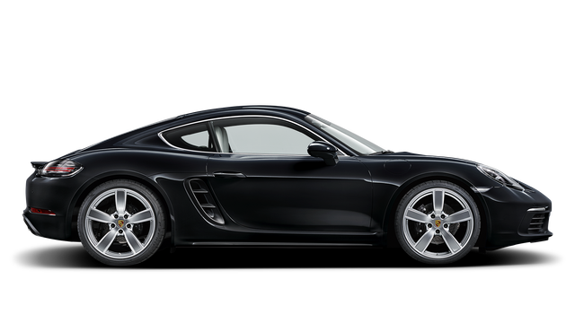
718 Cayman
The Porsche 718 Cayman is a mid-engine sports car known for its sharp handling
and agile performance. It features a sleek, aerodynamic design and a high-quality
interior. With turbocharged engines and precise steering, it delivers an engaging
driving experience. The car also includes modern technology and safety features,
though it maintains a driver-focused, compact cabin.
- 300 hp
- 4.7 s
- 171 mph
- $72,800
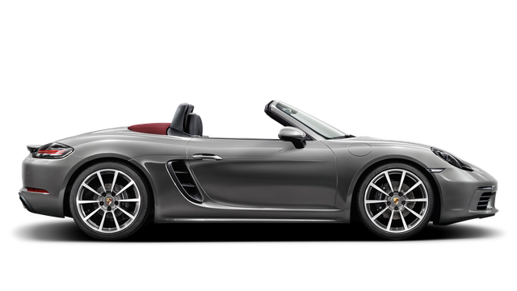
718 Boxster
The Porsche 718 Boxster is a stylish, mid-engine roadster that combines sporty
performance with open-top driving. It offers agile handling, turbocharged engines,
and a sleek, aerodynamic design. Inside, it features a high-quality, driver-oriented
cabin with modern technology. The 718 Boxster delivers an engaging driving experience
with precise steering and responsive power, while also providing a fun and versatile
convertible option.
- 300 hp
- 4.7 s
- 171 mph
- $74,900
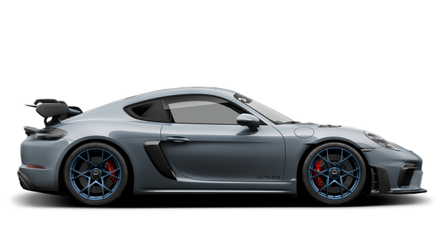
718 Cayman GT4 RS
The Porsche 718 Cayman GT4 RS is a high-performance sports car renowned for its
track-ready capabilities and exhilarating driving experience. It features a naturally
aspirated 4.0-liter flat-six engine, delivering exceptional power and a thrilling exhaust
note. The GT4 RS boasts aggressive aerodynamic enhancements, lightweight construction, and
advanced suspension systems for outstanding handling and cornering. Its race-inspired design
and focused interior make it a top choice for driving enthusiasts seeking a potent and refined
sports car.
- 493 hp
- 3.2 s
- 196 mph
- $164,200
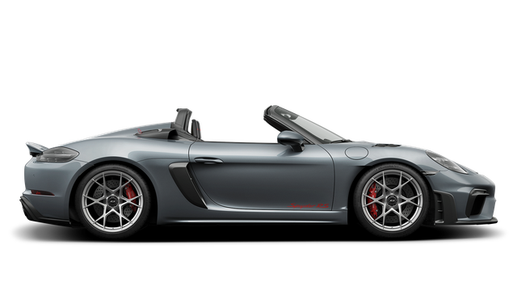
718 Spyder RS
The Porsche 718 Cayman Spyder RS is a high-performance, open-top sports car that combines
the agility of the Cayman with the thrill of a convertible. It features a potent 4.0-liter
flat-six engine, delivering impressive power and an exhilarating driving experience. The
Spyder RS boasts aerodynamic enhancements, lightweight construction, and advanced suspension
for exceptional handling. Its design emphasizes both sporty performance and open-air enjoyment,
making it a standout choice for enthusiasts seeking a dynamic and versatile driving experience.
- 493 hp
- 3.2 s
- 191 mph
- $164,200
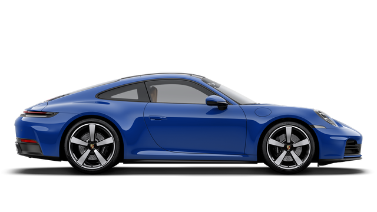
911 Carrera
The Porsche 911 Carrera is a high-performance sports car known
for its sleek design, rear-engine layout, and precision handling.
It features a powerful flat-six engine, delivering a thrilling driving
experience with a blend of luxury and cutting-edge technology.
- 388 hp
- 3.9 s
- 183 mph
- $120,100
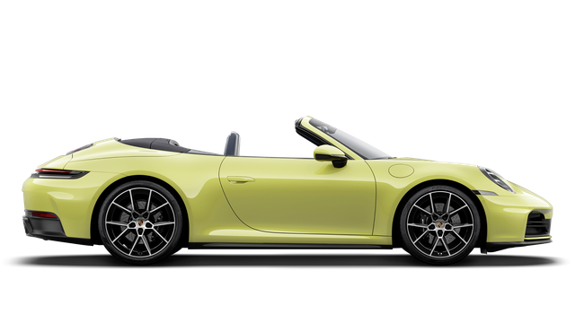
911 Carrera Cabriolet
The Porsche 911 Carrera Cabriolet is a convertible sports car that
combines the 911's iconic performance with open-air driving. It features
a retractable soft top, a powerful flat-six engine, and precise handling,
offering a luxurious and exhilarating driving experience with the top up
or down.
- 388 hp
- 4.1 s
- 181 mph
- $133,400
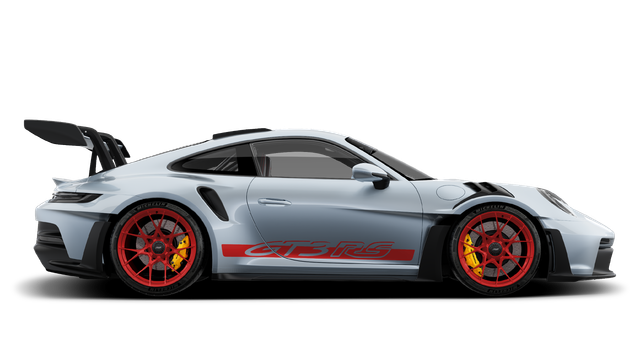
911 GT3 RS
The Porsche 911 GT3 RS is a track-focused sports car designed
for high performance and precision. It features a naturally
aspirated flat-six engine, lightweight construction, advanced
aerodynamics, and a race-inspired suspension. Known for its
exceptional handling and raw driving dynamics, it's a pinnacle
of Porsche's motorsport engineering.
- 518 hp
- 3.0 s
- 184 mph
- $241,300
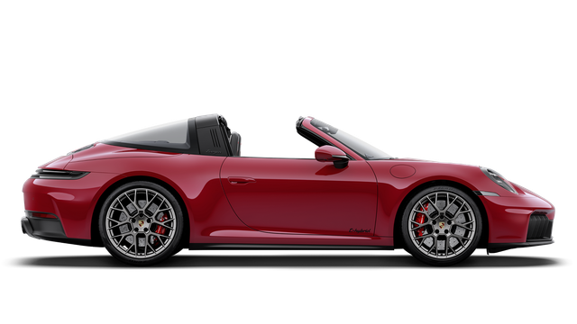
911 Targa 4 GTS
The Porsche 911 Targa 4 GTS is a blend of performance and style,
featuring a distinctive retractable roof panel and signature roll bar.
It comes with all-wheel drive, a potent flat-six engine, and enhanced
GTS performance features. This model offers a dynamic driving experience
with the versatility of a convertible and the rigidity of a coupe.
- 478 hp
- 3 s
- 194 mph
- $186,000
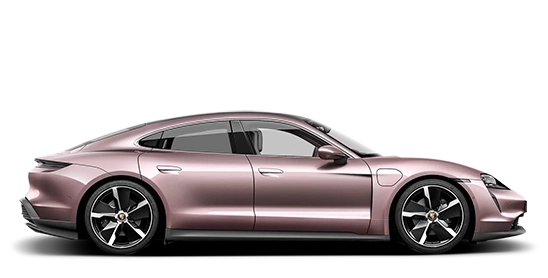
Taycan
The Porsche Taycan is an all-electric sports sedan that combines
cutting-edge technology with Porsche's signature performance. It
features dual electric motors for instant acceleration, a luxurious
interior, and advanced driving dynamics. The Taycan offers a blend
of sustainability and high performance, making it a benchmark in
electric vehicles.
- 402 hp / 300 kW
- 5.1 s
- 143 mph
- $90,900
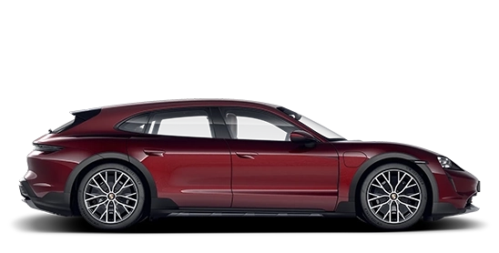
Cross Turismo
The Porsche Taycan Cross Turismo is an electric sport wagon that
combines the performance of the Taycan with added versatility. It
features an extended roofline, increased cargo space, and off-road
capability, thanks to its raised suspension and rugged design elements.
The Cross Turismo offers the same dual-motor powertrain and cutting-edge
technology as the Taycan, making it a practical yet exhilarating electric
vehicle.
- 469 hp / 350 kW
- 4.8 s
- 137 mph
- $101,900
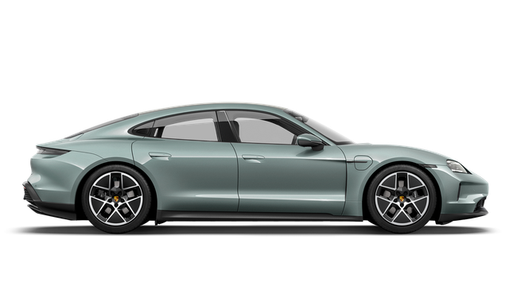
New Taycan
The new Porsche Taycan is an updated version of the all-electric
sports sedan, offering enhanced performance, improved range, and
the latest in automotive technology. It features dual electric
motors, advanced aerodynamics, and a refined interior with modern
tech amenities. The new Taycan continues to push the boundaries of
electric vehicle innovation while delivering the thrilling driving
experience Porsche is known for.
- 402 hp / 300 kW
- 4.5 s
- 143 mph
- $99,400
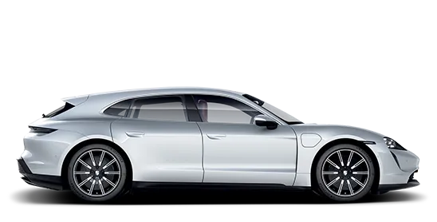
Sport Turismo
The Porsche Taycan Sport Turismo is a sleek electric sport wagon that
balances performance with practicality. It features a dynamic roofline,
spacious interior, and the same powerful dual-motor setup as the Taycan,
delivering a thrilling driving experience. The Sport Turismo offers added
cargo space and versatility, making it a stylish and functional choice for
those who want sports car performance in a more practical package.
- 590 hp / 440 kW
- 3.5 s
- 155 mph
- $141,200